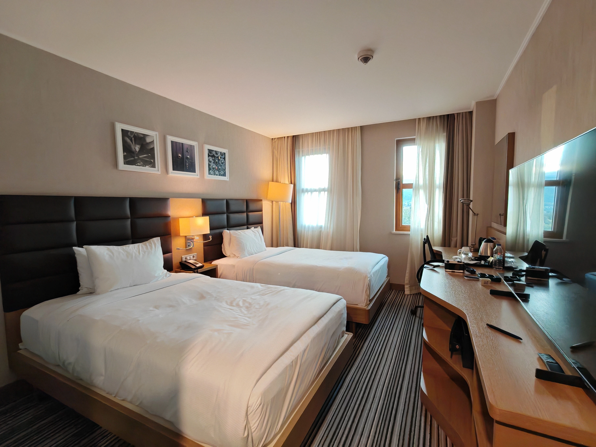
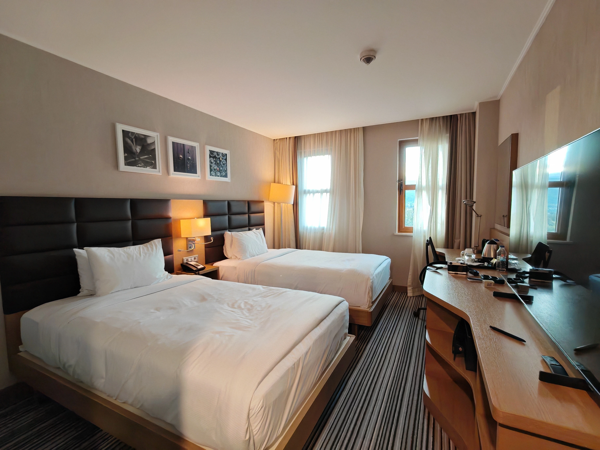

オスマン帝国時代の面影を色濃く残す世界遺産の街。かつてサフランの集積地として栄えたこの街は、赤い屋根と白壁の伝統的な木造家屋が1,000軒以上も現存する歴史的な宝庫です。
オスマン建築の宝庫
石畳の坂道を歩くと、17世紀から続くアラスタバザールでは地元の手工芸品や名物のサフラン製品が並び、昔ながらの商店街の雰囲気を味わえました。赤茶色の屋根と白い壁のコントラストが美しく、まるで時が止まったかのような光景が広がります。
サフランボルの建築様式は、オスマン帝国時代の伝統を色濃く残しています。木造の家屋は、1階が石造り、2階以上が木造という構造が特徴的で、2階部分が張り出した独特のデザインは「チャルシュ」と呼ばれています。

赤い屋根と白壁が続く伝統的な街並み
アラスタバザールの賑わい
17世紀から続くアラスタバザールは、サフランボルの中心地。狭い路地に並ぶ小さな店には、伝統的な手工芸品、サフラン製品、トルコ伝統のお菓子などが所狭しと並んでいます。
特に印象的だったのは、サフラン入りのトルコデライト（ロクム）。黄金色の美しい色合いと、ほのかな香りが特徴的で、お土産に最適です。店主たちは気さくで、試食を勧めながら製品の説明をしてくれました。

フドゥルルックの丘からの眺望
特に印象的だったのは、フドゥルルックの丘からの眺め。街全体を見渡せる絶景ポイントで、モスクやトルコ式浴場など、オスマン建築の美しい街並みを一望することができます。
夕暮れ時に訪れると、夕陽に照らされた赤い屋根が一層美しく輝き、まるで絵画のような光景が広がります。丘の上には展望台とカフェがあり、ゆっくりとトルコティーを飲みながら景色を楽しむことができました。
ヒルトンガーデンイン・サフランボル
宿泊はヒルトンガーデンイン・サフランボル、サフランボルの街の中心から車で10分ほどにある四つ星ホテルです。広くはありませんが、清潔で設備も新しく快適でした。
バスタブがあるのは日本人には嬉しいですね、ただシャワーの水流は若干弱めでした。今回のテーマがスマホのみ、パソコン無しの旅なのですがテレビが最新で、予定していたHONOR Magic V3を大型テレビに投影できたので比較的簡単に写真整理ができました。

 
